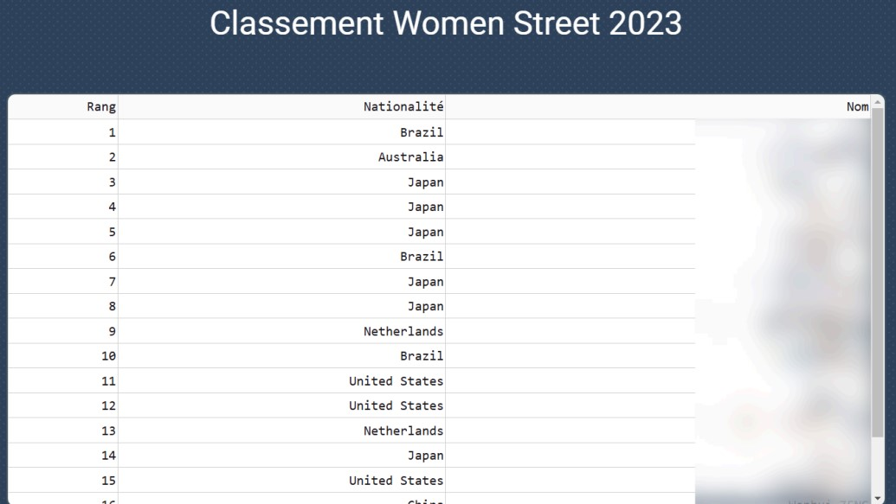
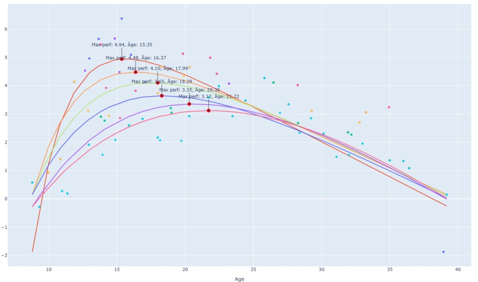
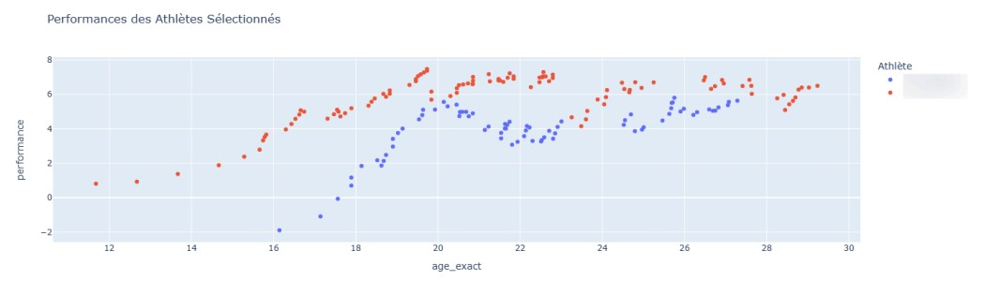
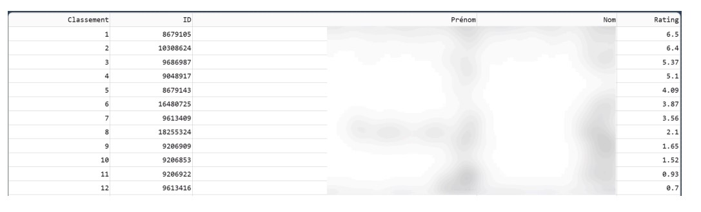
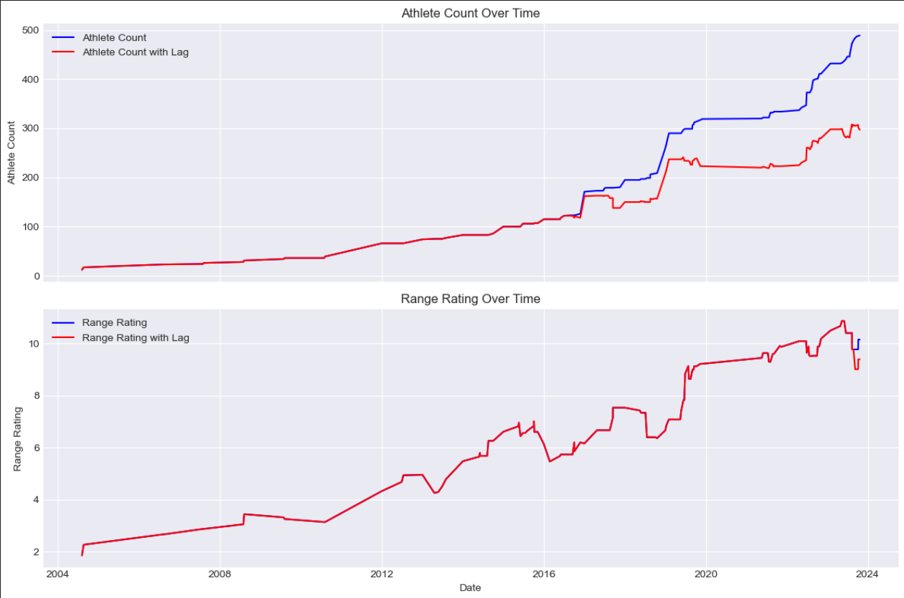

Comprehensive Analysis of Age and Performance in Skateboarding
In collaboration with IRMES and the French Federation of Roller and Skateboarding (FFRS), this project aimed to explore the relationship between age and performance in skateboarding. The focus was to overcome the unique challenges posed by skateboarding’s subjective scoring system and develop reliable tools for analyzing performance trends. By combining rigorous data processing, advanced rating models, and dynamic visualizations, this project delivered actionable insights for athletes, coaches, and researchers. Below is a detailed explanation of the methodologies and analyses conducted in this study.
1. Data Collection and Processing
Data integrity was a critical foundation for this project. The primary dataset was sourced from the FFRS database, which included information on athlete demographics, competition results, and rankings. Key steps in the data pipeline included:
- Data Cleaning: Removing duplicates, correcting inconsistencies, and standardizing formats.
- Missing Data Handling: Athlete birthdates, critical for age-performance analysis, were supplemented through web scraping and external sources.
- Data Enrichment: Integrating additional details like competition types (e.g., "Street," "Park") and event locations to enable more nuanced analyses.
These steps ensured a high-quality, enriched dataset suitable for reliable statistical modeling and visualization.
2. Defining Performance in Skateboarding
Unlike measurable sports like sprinting (e.g., time in seconds), skateboarding relies on subjective scoring by judges. This lack of an objective metric complicates analyses of performance trends. To address this, I implemented a robust rating system as a proxy for performance evaluation.
The Rank Ordered Logit (ROL) model was chosen for its ability to handle multi-competitor events, where athletes are ranked rather than directly compared. This model produces dynamic ratings based on competition outcomes, incorporating factors such as:
- Consistency: Frequent participants with stable performances receive reliable ratings.
- Ranking Influence: Higher rankings yield greater rating increases, while underperformance leads to declines.
- Event Context: Adjustments account for the relative strength of competitors in each event.
By using the ROL model, I established a consistent and scalable measure of performance, enabling robust analyses across competitions and years.
3. Age-Performance Analysis
Once performance ratings were established, they were paired with athletes’ ages during each competition. This linkage enabled the creation of age-performance datasets, which were used to identify trends and model performance trajectories. Key steps included:
- Age Calculation: Athlete ages were calculated by subtracting birthdates from competition dates, rounded to the nearest integer for group analyses.
- Filtering: Only athletes with a minimum of five competitions were included to ensure data robustness.
- Aggregation: Ratings were averaged or maxed by age group to identify peak performance trends.
Key Observation: Female athletes exhibited a declining age of peak performance, potentially linked to enhanced training programs post-Olympic inclusion.
4. Statistical Modeling: IMAP and Moore's Curves
To visualize and analyze performance trends, two complementary statistical models were applied:
- IMAP (Inverse Monotonic Age Performance): Captures gradual changes in performance as athletes age, providing a smoothed trajectory.
- Moore's Curve: A quadratic model that highlights peak performance age through a bell-shaped curve, ideal for identifying maxima.
These models revealed distinct trends, such as the progressive decline in peak performance age among female skateboarders, likely influenced by younger athletes entering competitions earlier due to improved access and training.
5. Visualizing Performance Evolution
A key deliverable of this project was the development of interactive visualizations to make data insights accessible and actionable. These include:
- Age vs. Performance Trends: Graphs depicting average and peak ratings across age groups.
- Rating Evolution: Time-series charts showing how ratings change over competitions.
- Comparison Tools: Filters to compare performance by gender, discipline, or year.
These visualizations not only highlighted the trends but also provided a practical tool for stakeholders to explore data dynamically.
6. Competition Analysis and Predictive Modeling
Building on the performance ratings calculated with the ROL model, I developed tools to analyze past competitions and predict future outcomes. This component addressed two main objectives:
- Simulating Competition Results: Using current ratings, I created a predictive model that ranks athletes based on probabilistic outcomes for upcoming events. This tool aids coaches in strategizing and identifying strengths and weaknesses in preparation for competitions.
- Historical Competition Insights: Analyzing trends in rankings over time, highlighting consistent performers and newcomers disrupting established hierarchies.
For instance, the simulation of a major event in 2023 demonstrated the dominance of a few top-ranked athletes, while also revealing potential for mid-tier competitors to ascend rankings under specific conditions.
7. Ranking Inflation Analysis
A significant challenge encountered was ranking inflation, where increasing numbers of participants artificially inflate ratings. This phenomenon occurs when additional competitors raise the average rating without corresponding improvements in performance quality.
To address this, I implemented:
- Lag Filtering: Excluding inactive or sporadic competitors to stabilize the rating pool.
- Inflation Adjustments: Adjusting ratings based on the size and consistency of the competitor pool, allowing for fairer year-over-year comparisons.
Findings: While male rankings stabilized after 2015, female rankings exhibited continued inflation, attributed to an influx of new athletes following skateboarding’s Olympic debut.
8. Performance Tracking and Rivalry Insights
The performance tracker tool was designed to visualize the career trajectories of individual athletes. By plotting rating evolution over time, coaches and analysts can identify periods of growth, stagnation, or decline for specific athletes. This tool also facilitates comparative analysis, enabling stakeholders to benchmark athletes against their peers.
Another novel visualization was the "duel graph,” which explored rivalries by comparing an athlete’s performance in events with or without a specific competitor. For instance, the analysis revealed that some athletes consistently underperformed when competing against their closest rivals, shedding light on potential psychological or strategic factors.
(Insert graphs: Performance tracker and duel graph examples)
9. Year-to-Year Analysis of Athlete Evolution
To understand the dynamics of competition, I examined year-to-year changes in athlete rankings and performances. This included:
- Retention Analysis: Tracking the consistency of top-ranked athletes across consecutive years.
- Performance Shifts: Identifying athletes who showed significant improvement or decline year over year.
- Athlete Turnover: Analyzing the entry of new competitors and their impact on rankings.
For example, a comparative analysis of 2022 and 2023 highlighted increased turnover among female skateboarders, aligning with broader trends of younger athletes entering high-level competitions.
10. Inflation Adjustments and Future Directions
Despite progress in mitigating ranking inflation, this remains an area for future research. Upcoming enhancements include:
- Dynamic Inflation Models: Developing algorithms to adjust ratings in real time as new data are integrated.
- Machine Learning Applications: Leveraging predictive analytics to refine performance forecasts and inflation adjustments.
- Real-Time Data Integration: Incorporating live competition data for immediate insights and updates.
These innovations aim to provide even greater accuracy and utility for stakeholders in skateboarding and other sports disciplines.
11. Conclusion
This project bridged the gap between subjective scoring in skateboarding and objective performance analytics, offering tools and insights to empower athletes, coaches, and researchers. From addressing ranking inflation to modeling age-performance relationships, this work contributed valuable methodologies and findings. The tools developed during this internship have laid a foundation for ongoing research and application in sports analytics.
For more information or collaboration opportunities, please contact me at alban.danet@efrei.net.